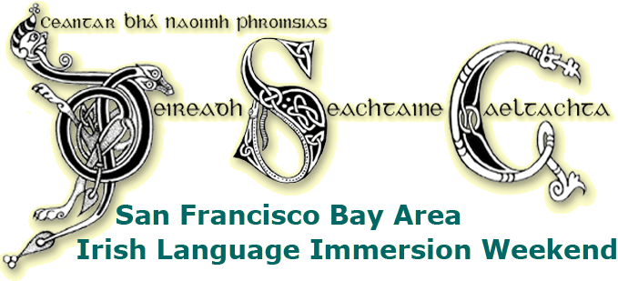

|  |
Ceiliúradh Naoí mBliana Déag ar an Fhód! Sept. 22–24, 2017 Four levels, intensive tutorials focusing on spoken language and increasing fluency. Meals and snacks provided. Practice Irish over breakfast, lunch, and dinner! Seisiúin! Bring instruments & voices for sessions each evening. We'll enjoy playing music, and sharing songs, poetry, stories, and plenty of craic, as Gaeilge. |
|
|
| Múinteoirí • Teachers: We've got more great teachers for you this year; some familiar faces and some new ones: Liam Ó Cuinneagáin Caitríona Weafer Ray Mac Mánais Bairbre Ní Chiardha Orla McGarry |
||
Registration is now open for 2017. The tuition is $420. Online payment is now available. You can pay securely with a credit card. Or, you can make a check or money order out to N.L. Ragsdale and send it to:
Seán Séamus Larkin
Book soon, as space is particularly limited this year.ATTN: DSG19 2 Admiral Dr #475 Emeryville, CA 94608 For more information, email Seán Séamus or call 415-299-0850. Guests are expected to provide their own accommodation. The Mirage Inn and Suites still appears to have some rooms left. Also, see our ad running in the Irish Herald. Go raibh míle maith agaibh. |
||
|
Course Details: This language course is geared to accommodate adults at all learning stages, from those just starting to those who are advanced but desire practice. There are four levels: beginner, intermediate, high-intermediate, and advanced. Class tuition is by specialist teachers, native apeakers who use proven methods of language instruction and are themselves native speakers. The teachers are coordinated via Oideas Gael, and travel to San Francisco especially for this course. Each day's study time will consist of intensive tutorials with attention directed toward spoken Irish and aimed at correct pronunciation, proper idiom, and development of vocabulary, particularly contemporary language. The intention is to foster conversational ability and fluency. Between classes, over meals, and during our seisiún each evening, you are encouraged to keep practicing your Irish with people from all levels, while enjoying the craic— it is of great benefit to hear Irish spoken ‘live’ around you, taking part to whatever degree you are able! (There will be the opportunity for an extra seisiún Sunday evening after the course ends, for those who want to stay and play.) Fee includes tuition and food (sandwiches, soup & fruit for supper Friday evening; cheese, Irish bread & coffee/tea available each morning; coffee/tea breaks; full meals for lunch & dinner Saturday, and lunch Sunday). Out-of-town attendees to make their own accommodation arrangements. We'll provide suggestions for nearby motels if needed. The course venue is the United Irish Cultural Center, in S.F. For more information, call 510-881-5958 or e-mail cce_gaeilge@ccewest.org — Treoraí na Gaeilge, Comhaltas Ceoltóirí Éireann, Cooley-Keegan Branch. |
||